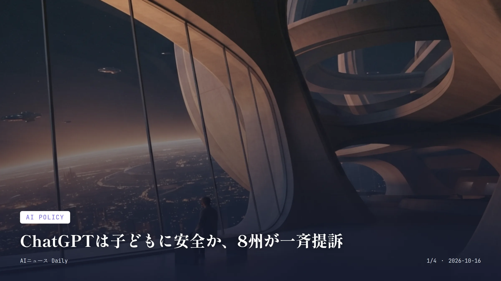

これは2026-10-16時点のアーカイブページです。最新のニュースはこちら
本サイトはアフィリエイトプログラムによる収益を得ている場合があります。

AI Policy
約1分で読める
ChatGPTは子どもに安全か、8州が一斉提訴
未成年への悪影響を巡り米8州が法的措置に踏み切る
8州同時にOpenAIを提訴した米国の州の数
2026年10月14日各州が訴訟を提起した日
米国のアイオワ、カンザス、ネブラスカ、ウェストバージニア、アーカンソー、アリゾナ、アイダホ、モンタナの8州が2026年10月14日、OpenAIを一斉に提訴した。ChatGPTが子どもに害を与え、安全性について保護者を欺いていたという主張だ。
アイオワ州の司法長官は声明で、ChatGPTが危険な医療助言をしたり、他人を傷つけるよう促したり、自殺するよう仕向けたりしていると主張した。OpenAI側は声明で、子ども向けの安全対策はすでにChatGPTに組み込み済みで、モデルの改善も続けていくと反論している。
フロリダ州も今年6月、OpenAIを提訴している。
なぜ重要か
州司法当局が消費者保護法を武器にAI企業を独自に訴える動きが広がってきている。今後ChatGPTの未成年向け仕様が大きく変わる可能性もある。日本ではまだこうした集団訴訟は見られないものの、子どもが日常的にAIチャットボットを使う状況は同じで、似たような安全性論議が後々起きても不思議ではない。
約1分で読める
NVIDIA CEO、危険なAI企業への供給停止に言及
AI安全懸念を巡る発言、英国への支援拠出も表明
2.5億ドル英国のAI安全研究向けにNVIDIAが拠出する5年間の計算資源の価値
年5000万ドル英国の現地クラウド事業者を通じてNVIDIAが提供する計算資源の年間額
NVIDIAのジェンスン・フアンCEOは2026年10月14日、ロンドンでのBloombergのインタビューで、危険なAIソフトウェアを作る顧客への半導体供給を止める可能性を問われ、「あくまで仮定の話だが、その通りだ」と答えた。ただ、実際に止める前にはまず相手と話し合うつもりだとも付け加え、NVIDIAが他社の経営にまで口を出す立場ではないとも述べている。
同じ日、フアン氏は英国のAI安全・セキュリティ研究に向けて、5年間で2億5000万ドル相当の計算資源を提供すると発表した。
なぜ重要か
AIブームを支える半導体を供給するNVIDIAのトップが安全性に言及したこと自体、業界への圧力になりうる。ただ発言は「仮定」「対話が先」と留保がついており、実効性はまだ未知数だ。日本の大手通信・クラウド企業もNVIDIA製チップに頼ってAI基盤を組んでいるため、同社の方針転換は国内のAIインフラ投資にも波及しかねない。
約1分で読める
会話を聞き続けるAI腕時計、Amazonが投入
会話を常時記録する新型2機種を発表、Eclipseは近日発売
74.99ドルBee Frontierの価格
99.99ドルBee Eclipseの価格
Amazonは2026年10月15日、会話を常時聞き取って記録・要約するAIウェアラブルの新機種「Bee Frontier」（74.99ドル）と、スマートフォンに磁石でくっつける「Bee Eclipse」（99.99ドル）を発表した。手首に着けるか服にクリップできるBee Frontierは防水仕様で、バッテリーは最大7日間もつ。
もう一方のBee Eclipseはクレジットカードほどの大きさで、スマホ背面に磁石で付けて通話内容も記録できる。Amazonは2025年7月にスタートアップのBeeを買収しており、今回が買収後初めての製品刷新だ。
Amazonによれば、会話データは暗号化され、ユーザーが共有しない限り外部には出ないという。Bee Frontierはすでに発売されており、Bee Eclipseは近日発売の予定だ。
なぜ重要か
常時会話を記録するAIウェアラブルは、議事録作成や物忘れ防止には便利だが、周囲の人の会話まで意図せず拾ってしまうプライバシー上の懸念もつきまとう。似た製品のAIレコーダー市場はすでに広がりつつあり、国内でも同様の製品やその扱いを巡る議論が起きても不思議ではない。
約1分で読める
詐欺のメッセージ、スマホのAIは見抜けるか
会話は端末内で完結、個人情報は外部に出ない設計
50%超詐欺がシンガポールの届け出犯罪全体に占める割合
40億Sドル超2019年以降の詐欺被害総額（シンガポール）
シンガポール政府のデジタル技術庁（GovTech Singapore）とGoogle DeepMindは2026年10月14日、スマートフォン上で詐欺のメッセージをリアルタイムに見抜く新しいAIシステムを共同で開発していると発表した。シンガポール国際サイバーウィーク（SICW 2026）に合わせた発表だ。
軽量なGoogleの「Gemma」モデルを端末内だけで動かし、怪しい会話パターンを検知すると利用者に警告を出す仕組みで、会話データをクラウドに送ることはない。シンガポールでは詐欺が届け出のあった犯罪全体の5割以上を占め、2019年以降の被害総額は40億シンガポールドルを超えるという。複雑な社会工学的手口が被害額の約8割を占めているそうだ。
広く使えるようになる時期は示されておらず、提供は段階的に進めるとしている。
なぜ重要か
会話内容をクラウドに送らず端末内だけで処理する設計は、プライバシーを保ちつつ詐欺対策AIを広げるひとつのモデルケースになり得る。日本でも特殊詐欺の被害は深刻な社会問題で、まだ同様の国家規模の取り組みは確認されていないが、こうした端末完結型のAI検知技術が参考にされる可能性はある。
Work & Labor
Work & Labor
約1分で読める
脆弱性25件を一度に直すAI、GitHubが正式提供
セキュリティ修正PRを自動作成、一般提供開始
25件一度にまとめて自動修正を依頼できる脆弱性アラートの上限数
2026年10月15日一般提供（GA）が始まった日
GitHubは2026年10月15日、コードの脆弱性をAIが自律的に直す「Agentic autofix（エージェント型自動修正）」機能を一般提供（GA）すると発表した。
仕組みはこうだ。コードスキャンで見つかった脆弱性のアラートをCopilotに割り当てると、コードベース全体から関連ファイルを探し出し、修正案を提案。CodeQLで再検証したうえで、検証結果付きの下書きプルリクエストを自動で作ってくれる。個々のアラートだけでなく、セキュリティキャンペーンの中で最大25件のアラートをまとめて一度に修正させることもできる。
使うには、既定ブランチ上のアラートであることに加え、企業管理者が新しい「Agentic autofix」ポリシーを有効にし、Copilotの課金設定を済ませておく必要がある。
なぜ重要か
セキュリティ修正という地味だが手間のかかる作業をAIが肩代わりすることで、エンジニアはコードレビューに時間を割けるようになる。ソフトウェア開発の生産性に直結する変化だ。GitHubは日本の多くの企業でも開発基盤として使われており、来週以降この機能を実際に触り始めるエンジニアも少なくないだろう。